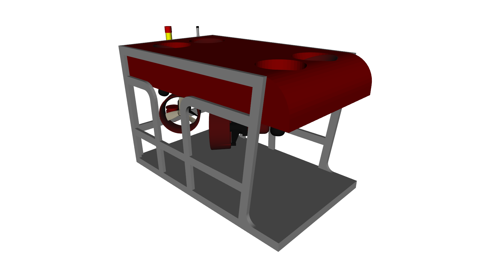
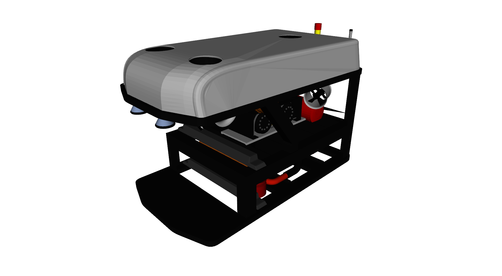
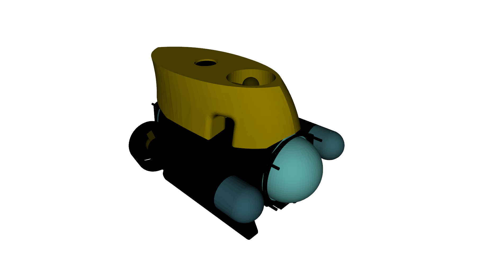
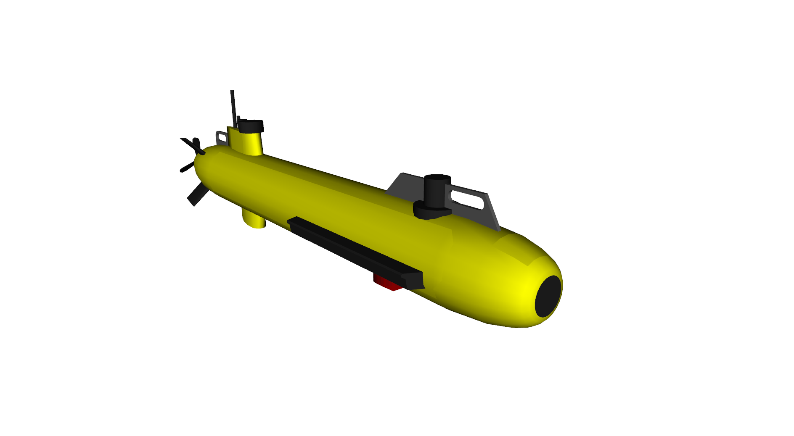

Vehicles available¶
RexROV¶
This is the test vehicle available in the UUV simulator package. The RexROV is a fully thruster actuated remotely operated vehicle for which the dimensions and hydrodynamic parameters are derived from the parameters for the SF 30k ROV available in [3]. It has a different thruster configuration from the SF 30k, with a total of 8 thruster units.
This vehicle model is included in the UUV simulator package as the default test vehicle. To run a demo, use the following
roslaunch uuv_gazebo start_pid_demo_with_teleop.launch joy_id:=0
RexROV 2¶
This vehicle is modeled with equal parameters, dimensions and thruster configuration as presented in [3]. To run a demo of this vehicle, clone the repository in your catkin workspace and then run a Gazebo UUV simulator world
roslaunch uuv_descriptions ocean_waves.launch
and then
roslaunch rexrov2_gazebo start_rexrov2_pid_controller.launch teleop_on:=true joy_id:=0
The teleoperation nodes are pre-configured per default for the XBox 360 controller.
Desistek SAGA ROV¶
To run a demo of this vehicle, clone the repository in your catkin workspace and then run a Gazebo UUV simulator world
roslaunch uuv_descriptions ocean_waves.launch
and the vehicle demo launch file
roslaunch desistek_saga_gazebo start_demo_teleop.launch joy_id:=1
The teleoperation nodes are pre-configured per default for the XBox 360 controller.
ECA A9 AUV¶
To run a demo of this vehicle, clone the repository in your catkin workspace and then run a Gazebo UUV simulator world
roslaunch uuv_descriptions ocean_waves.launch
and the vehicle demo launch file
roslaunch eca_a9_gazebo start_demo_teleop.launch joy_id:=0
The teleoperation nodes are pre-configured per default for the XBox 360 controller.